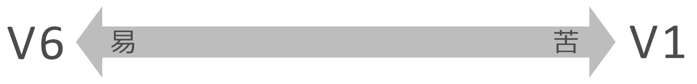

期試VLET – 期試打價能力㗂越固6 級度：V1，V2，V3，V4，V5。急度易一𪜀V6，和級度苦一𪜀V1。

於級度V5 和V6，期試主要打價墨度暁㗂越基本得学中垃学。於級度V1 和V2，期試打價可能暁㗂越中𡗉情況実際多様𧵑局𤯨。級度V3，V4 棟𣘾𠻀𪜀『橋𦀼』𡧲𡖡V1–V2 和V4–V5。
墨度公認𧵑VLET得体現通過二活動言語正𪜀：読和𦖑榜模写級度﹝於份辺𨑜﹞
呈排標準𢭸𨑗二技能㖠。
外𫥧，抵実現得各活動言語如読和𦖑，試生共勤固見識言語如：
字曰，詞彙，語法和各要素言語恪。
| 級度 |
標準打價
標準每級度得体現過二活動言語：
読暁和𦖑暁.
抵実現得各活動㖠，試生勤固見識撝字曰，詞彙和語法。
|
| V1 |
固体暁㗂越得使用中𡗉情況多様吧広𪶩
読 暁
-
読和暁各俳報，
俳分析，
評論撝𡗉主題恪憢𠇍内容復雑。
-
固体暁構築俳曰和意定表達𧵑作者。
-
固体読各文本固内容溇和暁𠓑𣳔沚立論共如枝節表達。
𦖑暁
-
固体𦖑和暁
会話，
信息，
俳講
得呐𠇍
速度自然。
-
固体揇得
内容，
媒関係
𡧲各人物和
構築 logic 𧵑
俳呐。
|
| V2 |
固体暁㗂越中𡗉情況広𪶩，包𪞍奇内容抽象
読暁
-
固体読
報，雜誌，
俳評論
𠇍内容
𠓑𠒥
和固
立論。
-
固体暁
𣳔沚
立論
和目的
表達。
-
固体處理
文本固
度苦
高於
墨相對。
𦖑暁
-
固体𦖑
会話，
信息
𠇍
速度
近
自然。
-
固体揇
内容
正，
関係
人物
和
意
正。
|
| V3 |
固世暁㗂越中𠁀𤯨常日吧認別字喃基本。
読暁
-
固体読
俳曰
撝
主題
慣属。
-
固体認別
一数字
喃
普遍
和暁
意義
基本
中
語景。
𦖑暁
-
固体曉
会話
常日
𠇍
速度
相對
自然。
|
| V4 |
固体曉㗂越基本和認面一数字喃単簡。
読暁
-
固体読
段文
単簡
憑
固
番国語。
-
固体認𫥧
一數字
喃
基本
常及。
𦖑暁
-
固体曉
会話
趻
撝
主題
慣属。
|
| V5 |
固体曉㗂越基本於墨限制。
読暁
-
固体読
句
単簡
和
通信
𠁀𤯨。
-
固体認知
一数字
喃
𫇐
普遍。
𦖑暁
-
固体曉
會話
𫇐
単簡
𠮩
訥
趻。
|
| V6 |
固体曉仍要素基本弌𧵑㗂越。
読暁
-
固体読
字丐
和
詞
基本
憑国語。
-
固体認別
沒数
記字
字喃
慣属。
𦖑暁
-
固体認別
詞
慣属
欺
呐
𫇐趻。
|